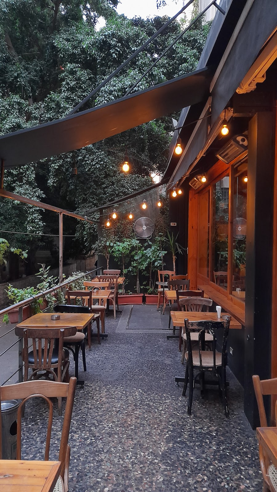
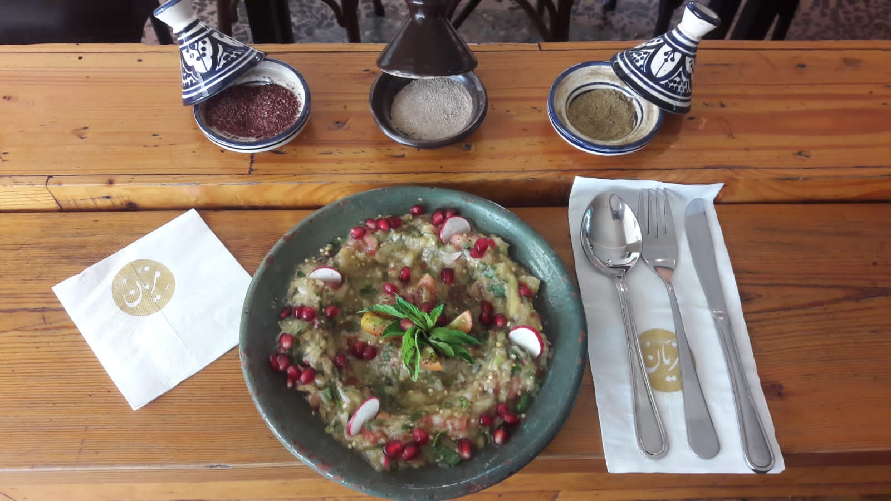
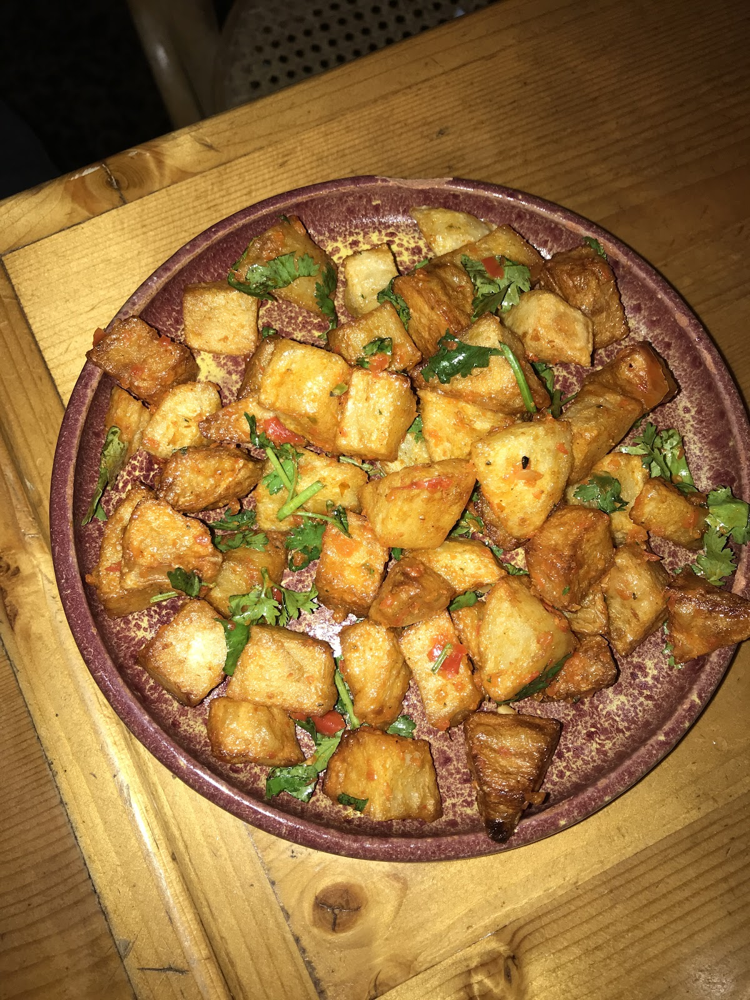
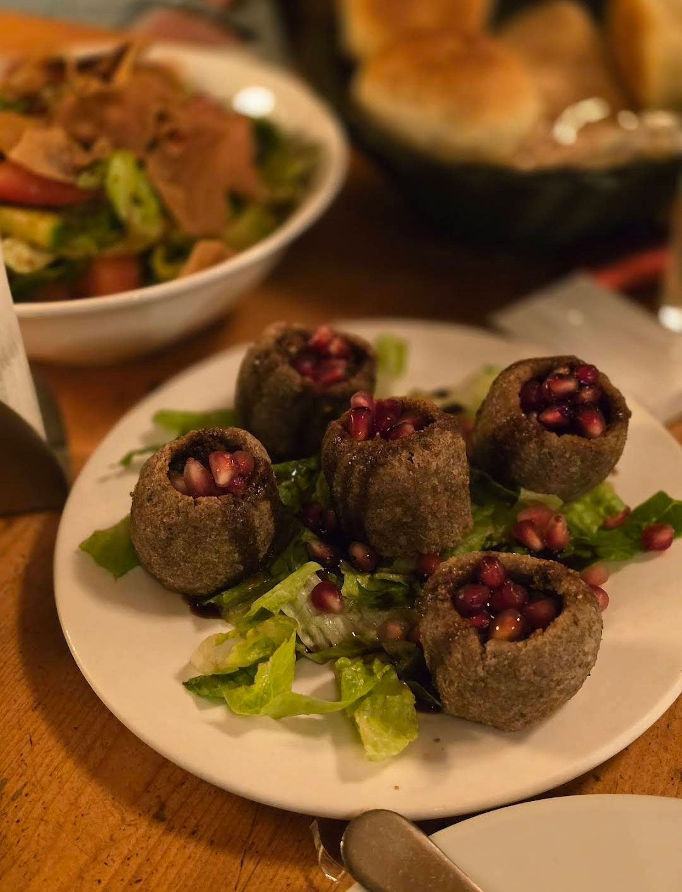
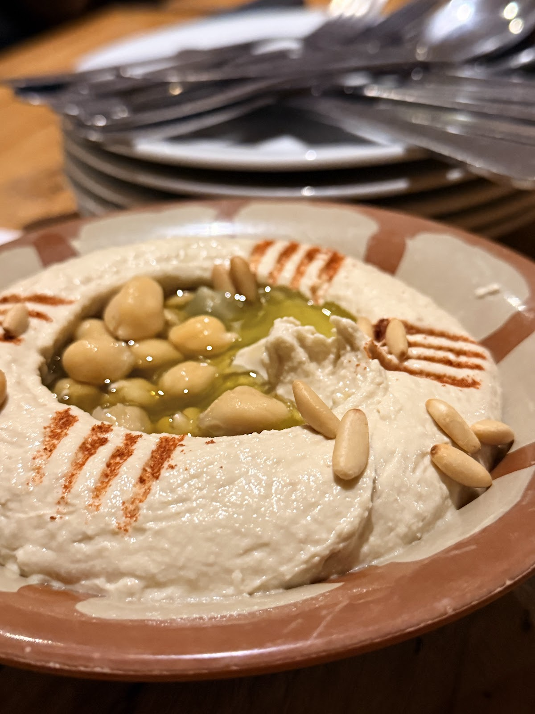

Mezyan Resto Pub is known for its lively vibe and great mix of food and drinks, perfect for a fun night out.Tarek Dalaty
Hidden in the middle of Hamra street the restaurant has decent arabic food and a nice ambiance but like most hamra outlets it caters and appeal to a certain category of people .Ziad Dakroub
This was my first time trying Mezyan, I had heard so many good things about from friends and family so I had to try it.Yara Gebara
| 9:30 AM–12:30 AM | |
| 9:30 AM–12:30 AM | |
| 9:30 AM–12:30 AM | |
| 9:30 AM–1 AM | |
| 9:30 AM–1 AM | |
| 9:30 AM–1 AM | |
| 9:30 AM–12:30 AM |
Rasamny Building, Hamra Street, Beirut
+961 71 293 015